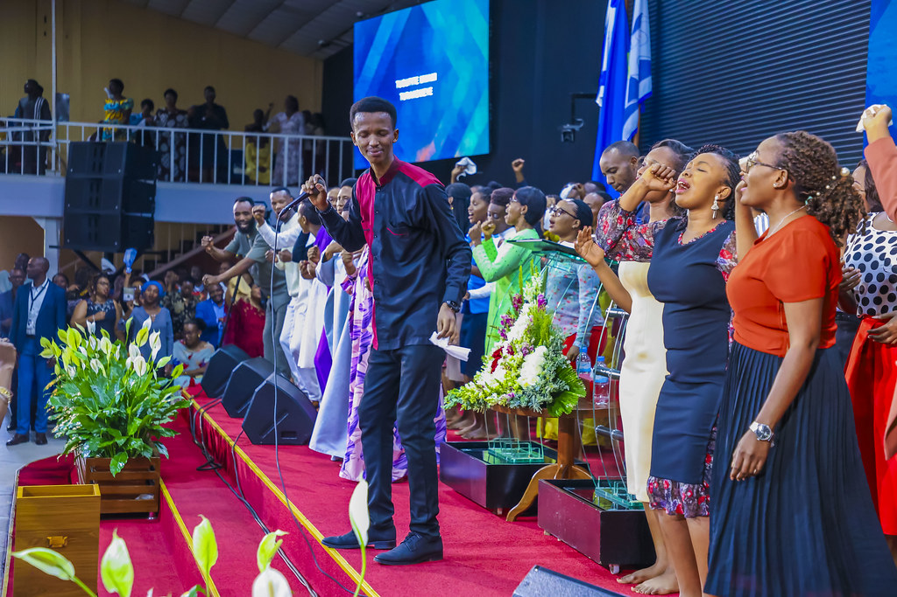
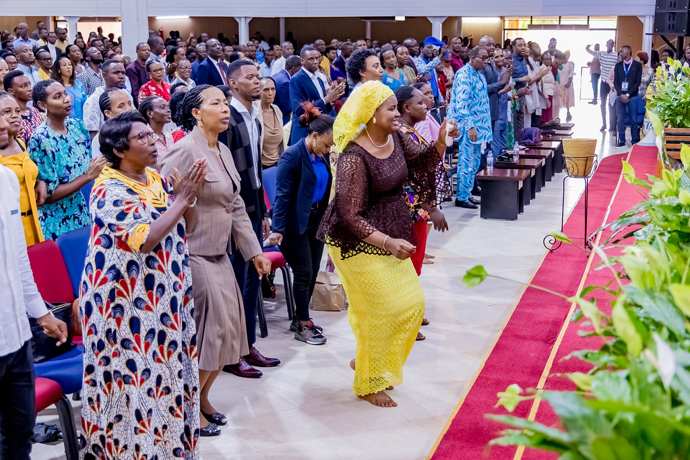

|
| Home | About | Ministries | Sermons | Events | about my project |
A message from our pastor DR Paul GITWAZA |
vision of our pastorHe envisions raising a global army of believers to prepare people for the return of Jesus. plays a role in rebuilding communities and promoting healing. His vision extends beyond spiritual matters, encompassing social and economic development. This includes initiatives in areas such as education, healthcare, and economic empowerment. He has a focus on awakening Africans to Christ centered living and their role in the transformation of Africa. This is shown through the Africa Haguruka initiative. |
zion temple church youthsYouth communities within Zion Temple organizations prioritize spiritual and character development, fostering a strong foundation in faith through teachings and activities. They emphasize community building, creating spaces for young people to connect with peers and engage in social events.Leadership development is also key, providing opportunities for youth to take on responsibilities and participate in service projects. Regardless of the specific Zion Temple, these youth ministries generally aim to provide a supportive environment for growth. |
 |
|  | Praise and worshipPraise and worship, in its essence, is a heartfelt expression of devotion and reverence. It encompasses a range of activities, primarily centered around music and song, that aim to glorify and honor the divine. This practice creates an atmosphere where individuals can connect spiritually, expressing gratitude, adoration, and seeking a deeper relationship with their faith. Through collective singing, prayer, and often physical gestures, praise and worship becomes a communal act of acknowledging God's presence. It serves as a means to celebrate divine attributes and foster a sense of awe and reverence. Ultimately, it's a way to express the profound connection between the worshipper and the object of their devotion. |